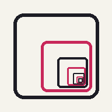

OG Paper
An open-source infinite canvas. Zoom in forever, draw at any depth, and keep your work in an open file format that outlives the app.
Truly endless
Unlimited zoom depth with no precision loss: tested from 10-0.6 to 1049.
Fast at any size
Only what is on screen is drawn: the same frame time at 1M or 10M strokes.
Files you own
Every canvas is one .ogp SQLite file with a published, openly licensed format.
Bookmarks
Save any view and fly back to it with one tap, even 1045 zoom levels away.
Timeline
Every stroke is time-stamped. Scrub or replay the canvas as it was at any moment, and restore it.
Offline copies
The web app autosaves in your browser. Download a copy of a canvas, or load one back, any time.
Everywhere
One Rust engine for Windows, macOS, Linux, Android and the web. Installs as an app from your browser.
Try mode
Try mode opens the real app on a demo canvas: a home page with a world hidden in the dot of an “i”, and inside that another, and another, 15 worlds down to 1045. A checklist walks you through drawing, zooming, panning, erasing, bookmarks and the timeline. Your drawings there autosave in this browser, separate from the app.
Get it
| Platform | How |
|---|---|
| Any browser | Open the app, then “Install app” / “Add to Home screen” for full screen and offline use |
| Windows, macOS, Linux | Releases page (unsigned builds; macOS: right-click → Open the first time) |
| Android | APK from the releases page |
| iPhone / iPad | Use the web app for now; a native build needs Apple signing |
Status
Early development (Phase 1). Working: pen, marker, highlighter with pressure, color dial and picker, eraser,
undo/redo, autosave to .ogp on desktop; on the web, bookmarks, a timeline, browser autosave and
downloadable offline copies (.ogpt). Next: stickers (paste PNG/JPG/SVG), shapes and selection,
textured brushes, multi-device sync, opening web copies in the desktop app.